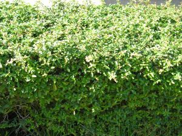
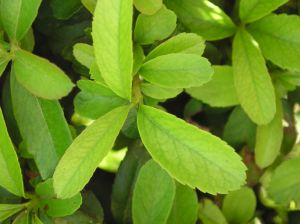
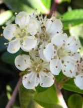
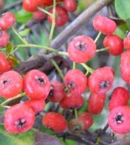

| Pyracantha
coccinea M. Roem., Fam.
Nat. Syn. Monogr. 3: 219 (1847), nom. cons.
Cotoneaster pyracantha (L.) Spach; Crataegus pyracantha Borkh. |
Rosáceas |
| Espino de fuego, piracanta, espino de coral, arbusto ardiente. | Arbusto
perennifolio |
|
Arbusto perennifolio, monoico, de 0,60 m [puede llegar a 3 m(1)], corteza de color pardo-rojizo brillante, ramillas espinosas. Hojas simples, alternas, cortamente pecioladas; lámina c. 30 x 15 mm, elíptica a lanceolada, con márgenes aserrados, coriácea, con el haz verde-oscuro y el envés glabro. Inflorescencias de tipo corimbo compuesto, densas. Flores hermafroditas, de c. 8 mm, blancas; cáliz con 5 sépalos cortos, triangulares y persistentes en el fruto; corola con 5 pétalos redondeados, extendidos y estrechados en la base; 20 estambres con anteras amarillas; ovario ínfero con 5 carpelos. Florece a finales de primavera y principios de verano. Fruto de tipo
pomo, globoso,
acompañado por el cáliz persistente, de color
rojizo-anaranjado,
con 5 semillas. Los frutos pueden llegar a
cubrir las ramas. |
  Fotos: Juan Viruel Sánchez, Nov.-2005 |
|   |
Observaciones: |
| Área de origen.- Italia, NE de la Península Ibérica, Asia Occidental. | |
| Uso en el campus.- Un seto de 90 m mezclado con P. angustifolia y un ejemplar aislado en forma de arbusto |
Localización.- E.T.S.
Ingeniería Informática |
|
(1) Ceballos L. & Ruiz de la Torre, J. (1979). Árboles y arbustos. Escuela Técnica Superior de Ingenieros de Montes. Para
determinar las especies:
Sánchez de
Lorenzo Cáceres, JM (2003). Las plantas del
género Pyracantha
cultivadas en España. Artículo disponible en
www.arbolesornamentales.com
|
|
|
|
|